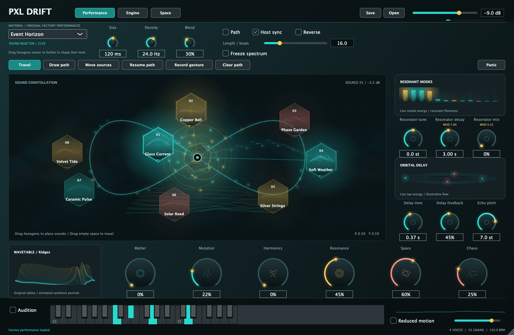
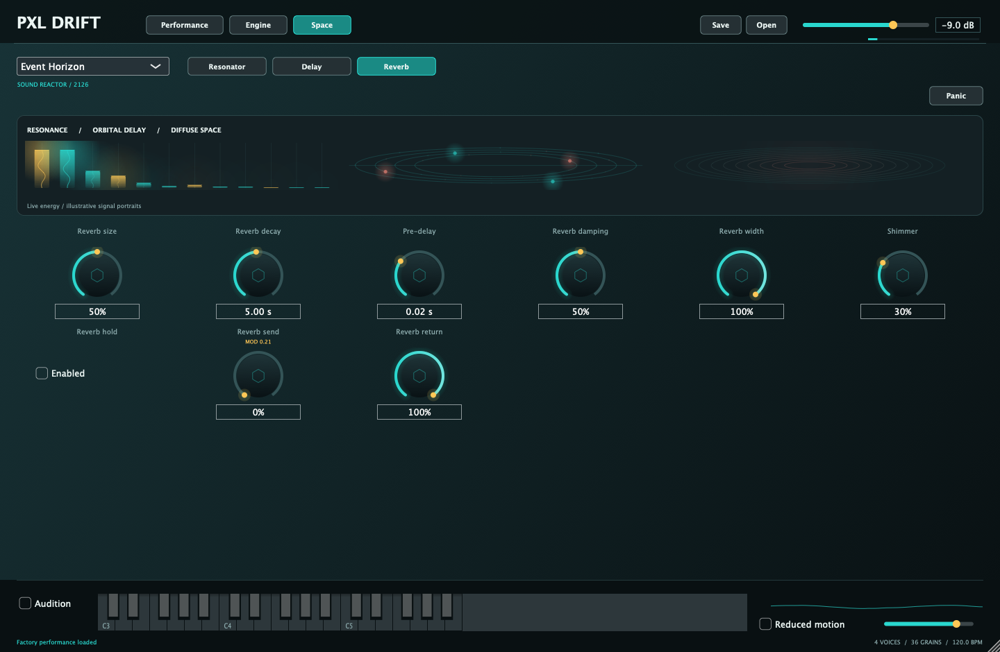
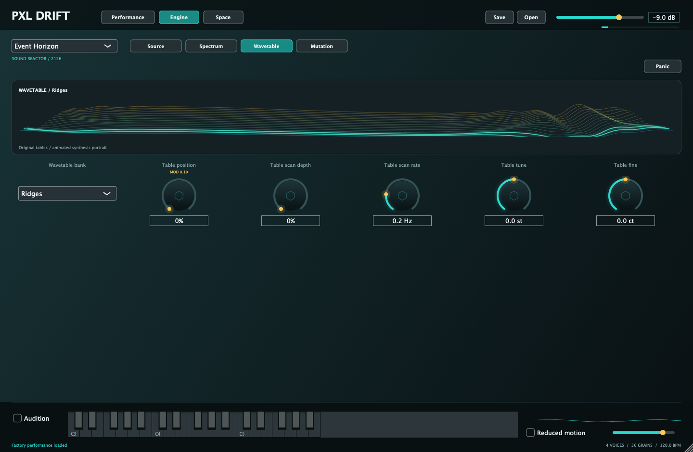

Between grains
and waves.
Four shared voices. Up to 128 grains. Eight original wavetable banks, each with sixteen morphing frames. Blend the two layers with Matter.
Sound, given space.
Eight sources.
One playable constellation.

Bring a texture closer. Let it fall away. Move between eight sound sources, or draw a path and let the instrument travel. Small gestures become evolving material.
Four shared voices. Up to 128 grains. Eight original wavetable banks, each with sixteen morphing frames. Blend the two layers with Matter.
Drag any source hexagon. Closer to the cursor is louder; farther away is quieter. Draw or record a trajectory, with host-synced playback.
Twelve tuned resonant modes. String, Glass, Plate and Cluster families. Shape decay and damping, or let the resonators follow your notes.
Four stereo delay taps with pitched repeats. Diffuse reverb with octave shimmer and Hold. Let a short gesture leave a long impression.
Seeded pitch, reverse, timing and position changes. Two LFOs, smooth random modulation and four routes. Keep a variation or find another.
Freeze spectral material, then sculpt its balance, bandwidth and motion. The six performance macros bring the deeper engine within reach.
A source moves toward the cursor, then away. This is the native interface with its actual stereo output. Press play to hear the distance.


AU and VST3. Eight original sample materials, eight wavetable banks and six factory performances. No Max for Live required.
Download the instrumentDeveloper ID signed · Apple notarized
macOS 12 or later · Apple Silicon only
Extract the ZIP and run Install-PXL-Drift.command locally in Terminal. It checks the bundles and preserves previous installations as timestamped backups.
You can also copy the AU to ~/Library/Audio/Plug-Ins/Components, the VST3 to ~/Library/Audio/Plug-Ins/VST3, and the standalone app to your Applications folder. Restart your host or rescan plug-ins afterward.
The download includes an AU instrument and VST3 instrument. Logic uses AU; Ableton Live can load AU or VST3.
The signed VST3 passed pluginval at strictness 5 and the installed AU passed Apple auval. Listening and compatibility with individual DAW sessions remain separate checks.
Yes. Drop a WAV or AIFF onto a source hexagon. Mono and stereo files are supported, up to sixty seconds per source. Portable presets include copies of your imported audio.
Its saved position controls the granular source's proximity gain. Near the blend cursor is louder; farther away is quieter. The small visual float does not move the audio position or change volume. The separate wavetable layer retains its own level.
The spectral engine reports a fixed 2048 samples of latency: about 42.7 ms at 48 kHz, including at zero Transform mix. Your host can compensate playback timing; live monitoring still has that delay.
Yes. The instrument includes Reduced motion and a visual brightness control. Reduced motion keeps useful readings while stopping decorative travel and floating. Neither control changes the sound.
Download all Pixel Records / PXL Mac plugins ↗ · Checksums + release notes ↗